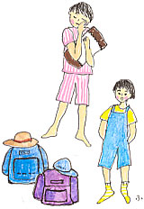
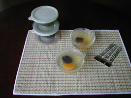

|
■通じても、通じなくても
ハムスターを預かった。
ハムスターとモルモットは親戚なのだろうか。確か、スナネズミというのもいたけれど、あれはハムスターとはどんなつながりなのだろう。
「そんなことがわからなくても、３日間くらいわけなくハムスターと暮らせるよ」
と太鼓判を押してくれたのは、ハムスターの家のタツヤ君だ。でも、ほんとのお世話係は妹のカナコちゃんなので、私はカナコちゃんにハムスターの生態について尋ねた。
「ヤコウセイだからね、夜、動きまわるんだよ」
「ふんふん」
「昼間は寝てることが多いの。死んでるんじゃないかって心配して、カゴを叩いたり、ゆすったりしないでね。ハムチャンが怖がるから」
「ハム……チャン？」
「うん。ハムスターだから、ハムチャン」
名前をつけるとき、もうひとひねりできなかったかなあ。でももしかしたら、ひねり過ぎた結果なのかもしれない、と余計なことを思いながら、カナコちゃんが抱えてきたカゴを覗くと、いたいた。ハムスターがまあるい小さな玉ころになって眠っている。
「かわいいねえ、ハムチャン」
ヒマワリの種と小さな栄養剤みたいな粒々の混ざった、にぎやかな餌も受けとって、小さなきょうだいを見送る。このときは忘れていたのだが、うちにはいちごがいた。いちごは、六歳になるメス黒猫。
タツヤ君とカナコちゃんと入れ違いに帰ってきたいちごは、首を傾けしばらくじっとしていたが、おもむろに仕事部屋へ。あっ、と気がついて、追いかけると、すでにハムチャンのカゴに飛び乗っている。
「いちご、あのね、タツヤ君とカナコチャンのハムチャンを預かったの。3日間、ここにいるの。留守番してるの。ね、脅かしちゃだめよ」
こんなことを幾度もくり返し言い聞かせた。その後も、何度かハムチャンのカゴに近づいてもそもそしていたが、私と目が合うたびに、
「わかってるってば。ちょっと、様子を見てるだけ」
とでも言いたげに、からだをくねらせている。そして、そのうちにハムチャンのことを気にしなくなった。
やっぱり、言い聞かせてみるものだわ。そう思った。通じても通じなくても。
厨にも似たようなことがある。
煮こみ料理。オーブン料理。蒸しもの。焼きもの――。下ごしらえや味つけなどやるだけやったあと、あっさり私の手をはなれていく料理が、少なくない。いってみれば、「時間」に委ねるわけだ。味噌づくりや果実酒づくりなども、その著しい例だろう。
手離れの瞬間、私はとつ然、願をかけるような気持ちになる。そして鍋やらオーブンやらに向かって、こう言うのだ。
「あとは、まかせるからね。よしなに」
鍋やオーブンまで脅すのかって？ ひと聞きのわるい。その心は「どうか、美味しくなっておくれ」なんである。ぬか漬けだって、よくよく頼んでおくと、色よく美味しく漬かってくれる。言い聞かせ、こちらの思いを知ってもらう。通じても通じなくても。
さて、「夏休み特別付録」ということで、「言い聞かせない方がいい」という話をひとつ。
うちの子どもたちは小さいころ、どこかへ出かけるという日に限ってたびたび熱を出した。熱を出しそうな気配など、まるでなかったのに、とつ然ポッと発熱する。
「明日は、みんなで動物園に行こう。たのしみにして、早く寝ようね」
そして翌朝、おでこをさわると、熱いのだ。そんな不思議とがっかりがくり返され、私は考えた。たのしみにし過ぎたり、緊張し過ぎると、子どもって熱を出すものなのかもしれない。そういえば私も子どものころそうだった。きょうは出かける、というとその日、よくお腹が痛くなったっけなあ。
あれは、沖縄の与那国島に旅立つ日の朝だった。与那国島は遠い。なにせ、日本の最西南端だからね。当時の便は、羽田から沖縄本島の那覇空港に飛び、そこから石垣島へ、石垣島から宮古島へ、宮古島から与那国島に、という乗り継ぎだらけの行程。ほとんど一日がかりの旅だった。那覇から飛行機会社は、南西航空（現在はパシフィックオーシャンと名を変えている）になり、那覇空港から石垣へ、宮古へ、与那国島へと乗り換えるたびに飛行機が小さくなっていく。宮古島から乗りこむ最後の飛行機ともなると、プロペラ飛行機である。大きい飛行機に目が慣れているせいか、「え、これで飛ぶの？」と一瞬ひるむ。スチュワーデスのお姉さんもひとりきりという、少人数飛行だ。
こんな旅の計画を、何日も前から言って聞かせたら、小さい娘はきっと熱を出すだろう。そう思った私は、保育園の先生にも頼んで、旅のことは伏せてもらい、当日の朝になって叫んだのだった。
「おはよう！ さ、沖縄に行くわよー」
そのときの娘たちの、きょとんとした寝ぼけ顔は、いまでも忘れられない。子どもたちは、「旅っていうのは、いつも突然はじまる」と思っていたはず。ハワイに行ったときもシンガポールのときも当日の朝、行き先を告げ、そのまま旅のひとになった。

■オーブンおまかせ「白身魚の香草焼き」
大きめ立派な白身魚……………………………………1尾
にんにく…………………………………………………1片
パセリ、タイム、セージなど合わせて…………大さじ3
塩、こしょう……………………………………………適宜
〈ソース〉
トマトジュース（180〜200g入り）………………2本
白ワイン……………………………………………100cc
にんにく…………………………………………………1片
トマト……………………………………………………2個
サラダ油…………………………………………………適宜
塩、こしょう……………………………………………適宜
※鯛やすずきの、大きいところを1尾、でんと焼いて、みんなで食べるお楽しみ料理。
・魚のウロコとなかみ（内蔵）をとり、よく洗って塩をふる。
・塩した魚をしばらくおいておく間、香草類と玉ねぎ、にんにく、トマトを（魚の分もソースの分も）みじん切りに。
・オーブンを200度に予熱する。
・〈ソース〉熱した鍋ににんにくを入れ、焦がさないように気をつけて炒める。トマトジュース、トマト、香草類を加えて煮こむ。白ワインも注ぎ入れて、少し煮つめる。
・〈魚〉玉ねぎ、にんにく、香草類のみじん切り、塩、こしょうを混ぜて、魚のお腹につめる。
・耐熱容器に魚を置き、上からソースをかける（魚の下にもソースがまわるようにする）。
・オーブンで20〜30分焼く。
★実はこのレシピ、『週末・みんなで料理！』（毛利敬子著・晶文社刊）のなかでおそわり、私流にアレンジしたものです（「鯛の香草焼き」P.52
）。とっても美味しい、おすすめの1冊。 ふ

|